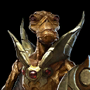
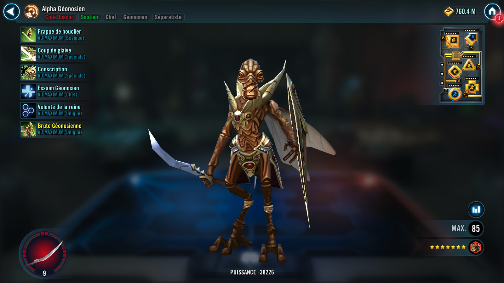
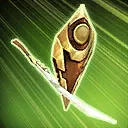
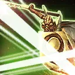
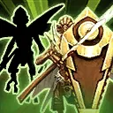
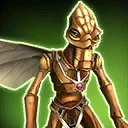

Geonosian Brood Alpha
Géonosian Support that swarms ennemis with summoned allies and Hive Mind

Géonosian Support that swarms ennemis with summoned allies and Hive Mind


Deal Physical damage to target enemy and dispel all buffs on them on a critical hit.

Dispel all buffs on all enemies. Deal Physical damage to all enemies and Expose them for 2 turns. Then, remove 15% Turn Meter from debuffed enemies.

Dispel all debuffs on all Geonosian allies. Summon a Geonosian Brute to battle if the ally slot is available, or if a Geonosian Brute is already present, he gains Critical Damage Up and Offense Up for 2 turns. Then, all Geonosian allies gain 15% Turn Meter and recover 35% Health and Protection.

Geonosian allies have +15,000 Max Health and Max Protection, and +50% Health Steal. Geonosian allies recover 3% Protection when they use their Basic ability. Basic abilities of Geonosian allies deal 10% more damage for each buffed enemy.
Geonosian Brood Alpha has +60% Tenacity. All Geonosian allies have the Hive Mind buff while Geonosian Brood Alpha is active, which can't be dispelled or prevented. When another Geonosian ally is defeated, reduce the cooldown of Conscription by 1. At the start of the encounter, summon a Geonosian Brute who Taunts for 1 turn.
Hive Mind: Assist whenever another Geonosian ally uses an ability during his turn, dealing 50% less damage; equalize Health and Protection with Hive Mind allies whenever an enemy uses an ability

Dark Side, Tank, Geonosian, Separatist
[Basic] Goading Strike: Deal Physical damage to target enemy and Taunt for 1 turn.
[Special] Swarm Tactics: Deal Physical damage to target enemy and call all other Geonosian allies to assist.
[Unique] Reckless Retaliation: Geonosian Brute has +25% Offense for each active Geonosian ally and +100% counter chance.
[Unique] Summoned: This unit's stats scale with the summoner's stats. This unit can only be summoned to the ally slot if it's available. This unit can't be summoned in certain raids. This unit can't be revived. If an effect counts defeated units, this unit doesn't count. When there are no other allied combatants, this unit escapes from battle. A unit can't be revived if this summoned unit exists in their slot.